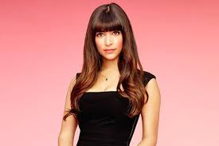
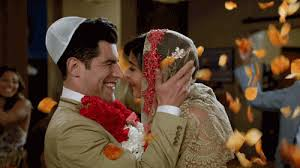

| Cece is one of Jess' only and truest friend. She has been with Jess through every heartbreak and trial, while also going through her own. CeCe is in the modeling industry, where she is known more for her looks than her intelligence, but that doesn't mean that she isn't smart. She gives Jess great advice and has always had her back. Her personality is a fighter and a lover. |  | |
|  | A huge part of the show is Schmidt and CeCe's rocky relationship. At first impressions, Schmidt was heads over hills at the new model friend, however CeCe wanted nothing to do with him. Through countless of rejections, they finally started to date which eventually lead them to marry each other in the later seasons. Their chemistry on the set was a great addition to the show and always brought the same kind of drama each episode is known for. |